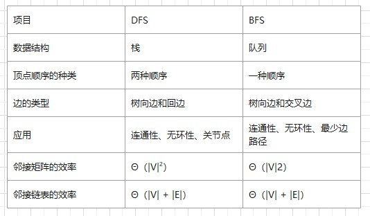
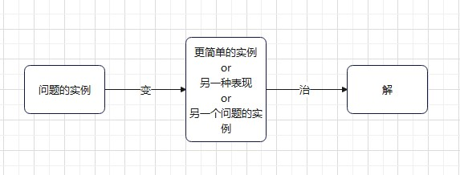

思想
前言
基于《算法设计与分析基础（Introduction to The Design and Analysis of Algorithms Third Edition）》.Anany Levitin
蛮力法
简单直接地解决问题，直接基于问题的描述和所涉及的概念定义
选择排序、冒泡排序
顺序查找
蛮力字符串匹配
最近对问题
直接计算所有点对的距离
凸包问题
对于平面上的一个点的集合（有限的或无限的），如果以集合中任意两点P和Q为端点的线段都属于该集合，此集合就是凸的。
一个点集合S的凸包（convex hull）是包含S的最小凸集合
若点的数量有限，直接对每一对点的连线检验其他点是否都在此直线的一边，即可确定极点。
穷举查找
旅行商问题（哈密顿回路）、背包问题、任务分配问题、深度优先查找(DFS)、广度优先查找(BFS)

减治法
利用给定问题的解和同样问题较小实例的解之间的对应关系。自顶向下或自底向上(通常需迭代，又称增量法)
- 减去常量规模：例如一次减1规模的插入排序
- 减去常量因子：例如一次减常数因子2的快速排序
- 减去的规模可变：例如减小的规模不确定的”求最大公约数的欧几里得算法”
拓扑排序
DFS或源删除算法
分治法
- 将一个问题划分为同一类型的若干子问题，子问题最好规模相同
- 对这些子问题求解（一般是递归）
- 有必要的话，合并这些子问题的解，以得到原始问题的答案
变治法
- 变换为同样问题的一个更简单或者更方便的实例（实例化简）
- 变换为同样实例的不同表现（改变表现）
- 变换为另一个问题的实例，这种问题的算法是已知的（问题化简）

时空权衡
用空间换时间，预处理（输入增强input enhancement）、预构造（prestructuring）、动态规划（dynamic programming）
贪心算法
每一步操作中总是选择当前最佳操作
条件
- 可行的（feasible）：它必须满足问题的约束
- 局部最优（locally optimal）：它是当前步骤中所有可行选择中最佳的局部选择
- 不可取消（irrevocable）：选择一旦做出就无法改变
迭代改进
从某些可行解（一个满足问题所有约束的解）出发，通过重复应用一些简单的步骤不断改进
-------------文章到此已结束发现错误请指正-------------